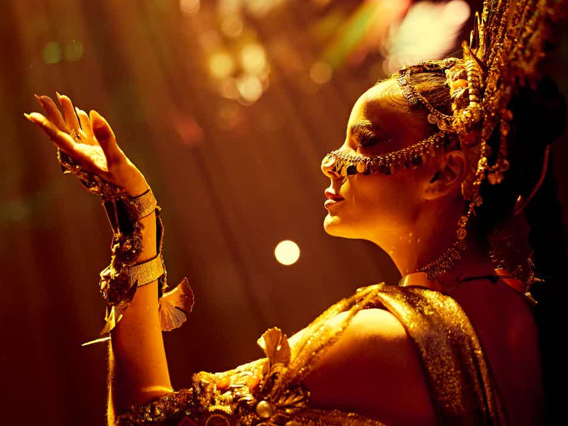
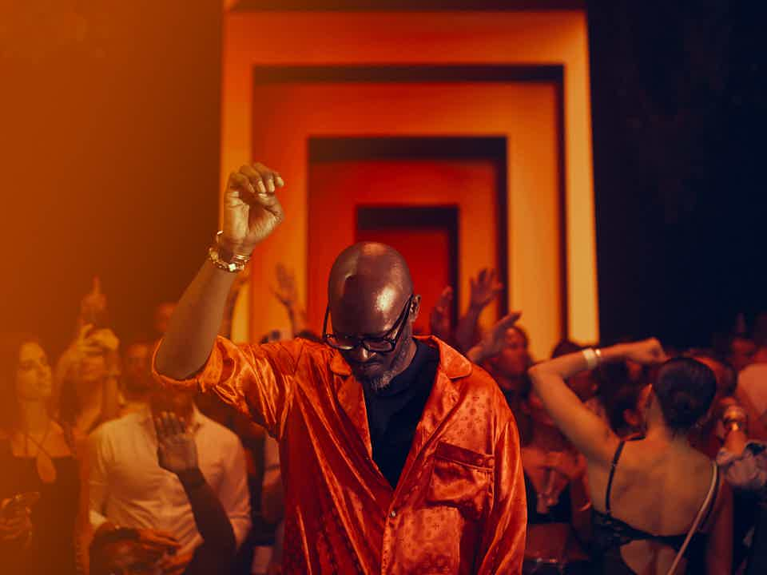

Black Coffee
 Hï Ibiza
Hï Ibiza
 Information
Information
Club rules:
Black Coffee plays at Hï Ibiza every Saturday in the Theatre, while Skepta brings Más Tiempo to the Club Room
THEATRE - Black Coffee
The artist behind one of the most influential sounds of our time returns to celebrate the eighth year of his flagship Saturday night residency at Hï Ibiza, renewing a partnership that has become a true symbol of the island for its impact on contemporary electronic music.
A singular figure within the electronic scene, Black Coffee's sonic proposal — a fusion of African roots, Afropolitan sensibility and a musical intuition honed over decades — positioned him as a pioneer of afro house long before the sound reached global projection. He was also the first African artist to win a GRAMMY for Best Dance/Electronic Album for Subconsciously, a milestone that consolidated his role as a global ambassador for African sounds.
The relationship between Black Coffee and Hï Ibiza began in 2017, the club's inaugural year, born from a shared vision: the conviction that Ibiza was ready to welcome a new sound, embodied by a headline resident DJ and tastemaker. Since then, this collaboration has become one of the island's defining residencies: sophisticated, emotional and deeply connected to the dancefloor, embraced by an international audience that understands music as a transformative journey.
Each season, Black Coffee invites artists, filmmakers and creative talents from across the African art scene to shape the visual universe of the residency.
CLUB ROOM - Skepta Presents Más Tiempo
Grime pioneer Skepta brings his house-focused label and event brand Más Tiempo to Hï Ibiza with a new Saturday residency in the Club Room. In recent years, the multidisciplinary artist has expanded his language into electronic music and club culture. Conceived as a creative platform to explore new textures within contemporary house, Más Tiempo represents a different facet of his sonic universe: warm grooves, uplifting energy and a vision deeply rooted in the collective club experience.
For over two decades, Skepta has redefined the global reach of British music. Rapper, producer, creative director and cultural entrepreneur, his career has been instrumental in taking grime from London's pirate radio underground to the centre of global music culture.
Lineup Black Coffee at Hï Ibiza 2026
Black Coffee brings an extraordinary cast of guests to his weekly residency: Dixon, Damian Lazarus, Guy Gerber, Kabza De Small, Kerri Chandler, Loco Dice and CamelPhat headline a list that also includes ANOTR, Dubfire, Henrik Schwarz, Marco Carola, WhoMadeWho and many more. From deep Afro house to raw techno, every Saturday is a different journey, and the full A-Z guarantees there is something for everyone.
Tickets for Black Coffee at Hï Ibiza 2026
Tickets for Black Coffee are now on sale starting from 80€ for Entry Before 1am tickets, or 100€ for General Admission tickets. If you're looking for a Premium experience, VIP tickets are available for 1,000€. Don't miss out, as these sell very fast!
Club: Hï Ibiza





FAQs - Black Coffee
How to get to Black Coffee at Hï Ibiza?
Black Coffee takes place at Hï Ibiza, located on Carretera Playa d'en Bossa, opposite Ushuaïa Ibiza.
Google Maps link: https://maps.app.goo.gl/q3icyHytEB4fkg2i9
Bus: There is a bus stop at the entrance of Hï Ibiza.
- Ibiza – Playa d'en Bossa: Line 14 (€2).
- San Antonio – Playa d'en Bossa: Discobus Line 3B (€5)
- Santa Eulalia – Playa d'en Bossa: Line 13 (to Ibiza) then take another bus to Playa d'en Bossa.
Taxi: There is a taxi rank at the entrance of Hï Ibiza. Prices vary depending on the starting point.
- From Ibiza town to Hï Ibiza: Around €15, with a journey of approximately 10 minutes.
- From San Antonio to Hï Ibiza: Takes about 25 minutes. The price is approximately €35.
- From Santa Eulalia to Hï Ibiza: Similar to San Antonio, with a journey of just over 25 minutes and a price of around €35.
Private transfer: We work with Dipesa, the largest and most professional private transport company in Ibiza. Prices vary depending on the route.
Still need help?
Dates and opening times for Black Coffee?
Black Coffee takes place at Hï Ibiza every Saturday from 2 May to 3 October 2026.
The Black Coffee event starts at 23:30.
Still need help?
What is the age requirement for Black Coffee?
To enter Hï Ibiza you must be 18 years or older.
Entry is not permitted for anyone under that age, even if accompanied by another adult or their parents.
Still need help?
What DJs and music can I expect at Black Coffee?
Black Coffee will lead the Theatre and Skepta will be there every week in the Club Room. You can see the other artists joining them during the purchase process.
Black Coffee plays Afropolitan, Afro house and deep house.
Skepta plays house and tech house.
Still need help?
What is the dress code for Black Coffee?
For the Black Coffee event the dress code for General Admission is casual.
Dress code: Flip-flops, swimwear, bare torsos, men in vests, tracksuit bottoms, hoodies, trainers or hats and/or football/basketball team shirts are not allowed, as well as any ideological attire that may offend the sensibilities of attendees at Hï Ibiza facilities. Selfie sticks will also not be allowed.
Black Coffee: dress code for the VIP Area:
Dress code — aim for sophistication. IMPORTANT: *men must wear long trousers*
Still need help?
How much are drinks at Black Coffee?
As for drinks, a mixed drink (vodka lemon, gin tonic, etc.) will cost from 23€, a beer 18€ and water 15€. For this, we recommend buying the 5-drink package for 99.99€ in advance and saving up to 30€.
Still need help?
VIP ticket/table for Black Coffee?
VIP EXPERIENCE ENTRY is available for this event at a price of 1,000 € per person.
Includes priority access through the VIP entrance (Industry Access), access to VIP areas (excluding VIP table area and private balconies) and 5 drinks per entry (excluding Champagne). VIP EXPERIENCE tickets are available during the purchase process for most Hï Ibiza events.
VIP tables for Black Coffee operate with a minimum spend. To book a table, a set amount is required, which varies depending on the event, table location and time of booking.
Booking a VIP table includes entry for you and your guests through VIP access, a private table, and the minimum spend is used as credit to buy bottles.
If you are interested in booking a VIP table, please contact the VIP department directly.
Still need help?
Tips for Black Coffee at Hï Ibiza?
If your hotel is located in Playa d'en Bossa, have a drink during the Ushuaïa party at the secret Ushuaïa Tower Rooftop! Book your drink here only.
You can also enjoy a menu at Gordon Ramsay's Hell's Kitchen before going to Hï Ibiza. The restaurant is located at The Unexpected Ibiza Hotel and is open from 19:00 to 23:30. You can make your purchase through the following link: here
Don't miss the experience at 'The Wild Corner' in Hï Ibiza, the world's most infamous bathroom. Expect the best of house and disco, with renowned guests appearing for unannounced sets.
Still need help?